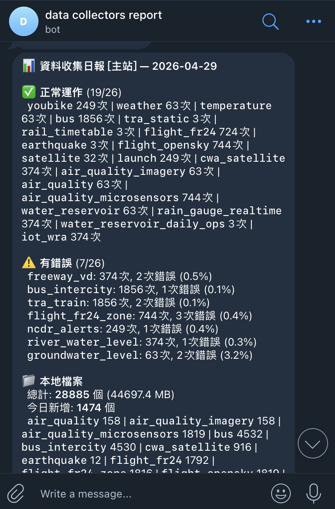
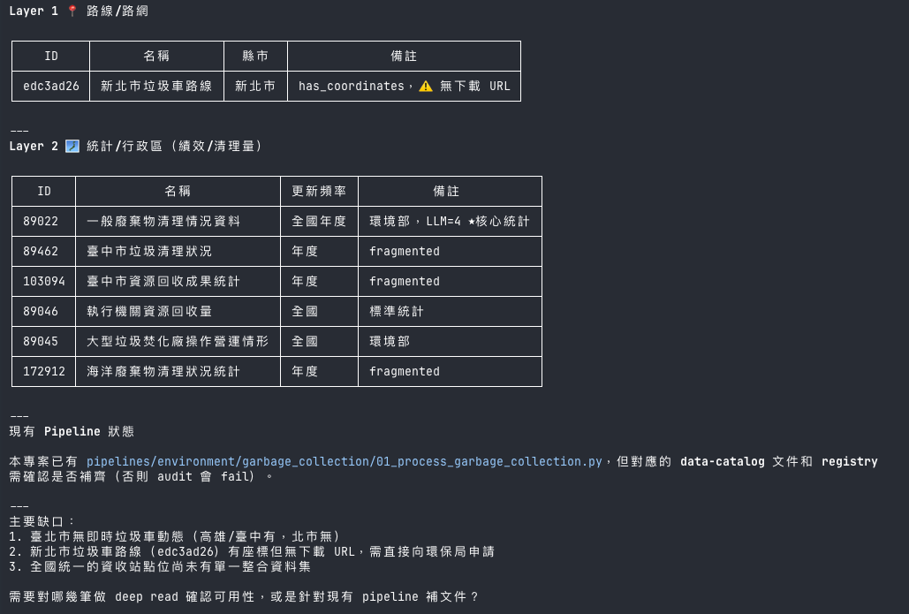
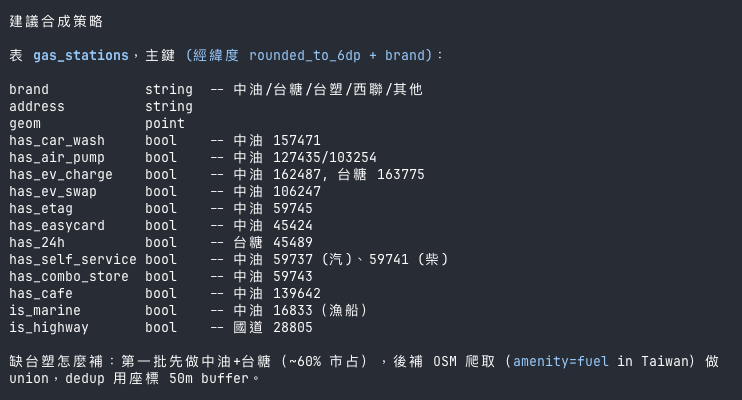
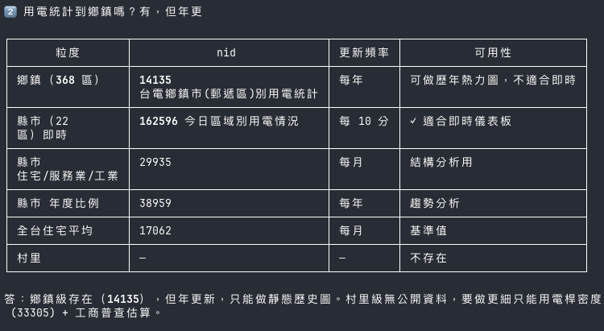
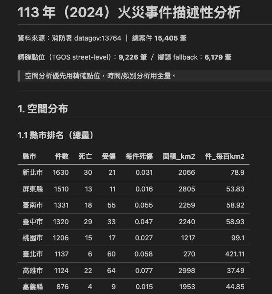
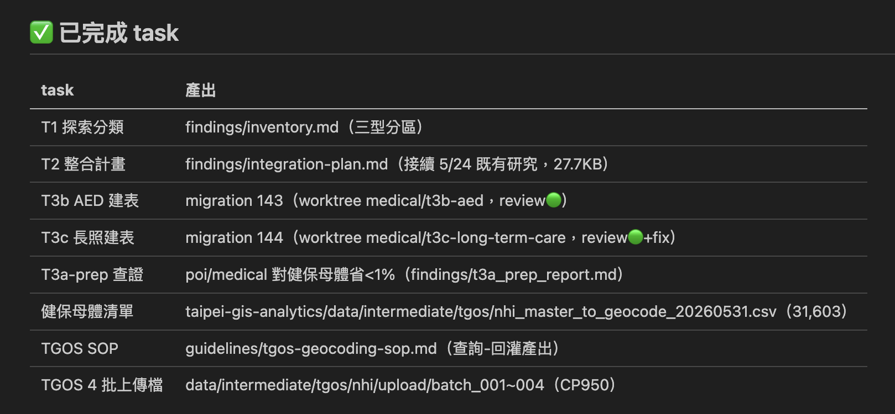
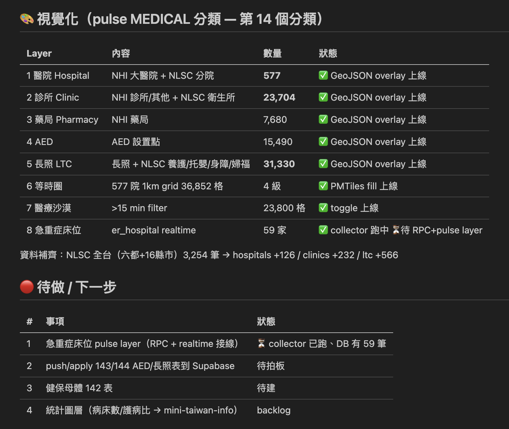
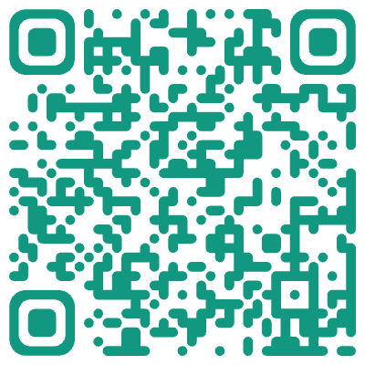
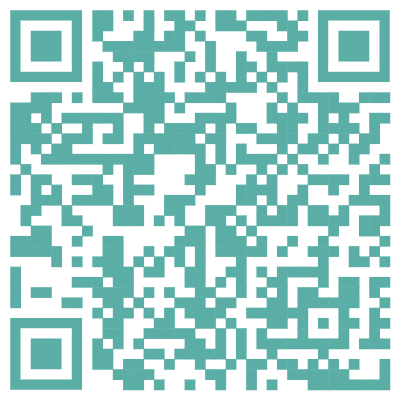

01
◐
SHOWCASE
專案介紹
做了什麼 · 開放資料 × 地圖
把台灣開放資料，交給 Agent 養成一套會自己長大的系統

成果 → 系統 → 循環
從一個個的 CSV，到一張會呼吸的台灣地圖。陸、海、空全部疊起來。
把一份 CSV 轉成 GeoJSON 拖進 Kepler.gl，就有了第一張地圖 ——「原來台灣有這麼多資料，原來轉成地圖並不難」。
捷運 → 台鐵 → 高鐵，三套軌道疊成一張會動的地圖。體驗到動態的魅力。
用公開 TLE 推算衛星軌道，再延伸到太陽系 —— 同一套做法，只要有資料，都可以無限延伸。
航港局 AIS 即時點位 —— 青藍光球 + 30 分鐘漸層拖尾，畫出台灣周邊海域的脈動。
天空、海洋、大地、街道、清運 —— 五脈共動，疊成同一張會呼吸的地圖。第一次從「靜態 JSON」進化成「時空間資料庫」。
農田、河川、溝渠、堤防、淹水潛勢同框
—— 把孤島 JOIN 起來，看到更多連結性。
醫院、診所、藥局、AED、長照點位 + 等時圈
—— 看見可及性，也看見醫療沙漠。
雷達回波、水庫、雨量、災害示警
—— 不同頻率在 RPC 層統一，一拖時間軸全部同步回放。
把衛星雲圖 / 火點 / 夜光疊回地圖，地面感測 + 太空視角同時看，事件第一時間就有兩個來源互相印證。
抓取新聞、抽出地名與事件時間，釘在地圖上的時間軸。哪裡在發生什麼、跟哪些資料相關，一眼看出來。
空品、雨量、水位、地震 —— 不同來源、不同頻率，在同一張地圖即時刷新，異常值會自己亮起來。
整理成主題儀表板網站 —— 基礎統計、人口、軌道運輸、航運、水資源、消防、醫療，一頁一主題。
把一段時間的所有起降，畫成一張航跡圖 —— 高度色變 + 光軌拖尾，疊起來就是機場的「指紋」。
五條平行跑道 + 等待航線，畫出像賽車場的幾何 —— 流量本身，就是一種形狀。
顯示航司 / 機型 / 註冊號 / hex，並依高度畫出該機在空中的可見扇形（Viewshed）。
禁航區、限航區、管制盤的 3D 極光圖層。點限航區，顯示時段限制（如 2300–0200 UTC）。
EGLL / EGKK / EGSS / EGGW + 支線約 10 場 —— Heathrow 單點樞紐密集進場，周邊分流。
KJFK / KEWR / KLGA 日間輪轉、晚間集中 —— 對照倫敦的單點樞紐，是兩種城市性格。
同機場、不同日期對比。杜拜 OMDB（2,740 軌跡），看見迴避路線與戰後復甦。
大面積無差別覆蓋是 OpenSky 的長處 —— 進場細節用 FR24、空域骨架用 OpenSky。
前面看到的成果，背後都來自同一套資料系統 ——
接收 → 整合 → 生成 → 觸發
接下來，帶你看它怎麼一塊塊組起來。
每一步都可以單獨抽換 —— 整套不需要重蓋，加新東西也不會牽動其他層。

跨平台、跨主題、跨格式 逐筆 vetting 不再只是關鍵字搜尋
抓出資料集之間應該會有的影響關係 時間 · 空間 · 主題
把零散資料拉成可被推理的網絡 Agent 自己跑下一步






人類角色 —— 給目標、收報告。中間五個齒輪自己轉。
人不用守在前面。給目標、收報告 —— 其餘的事 Agent 自己排隊跑完。
前面的成果、後面的系統，最後串成一個 Agent 能自己跑完的循環 ——
我出題，Agent 跑整圈，回來交付。
一個編排中樞，串起一圈獨立 repo —— Agent 依序進站。
TAIPEI-GIS-ANALYTICS — 進資料夾，先把家底摸清楚。
DATA-COLLECTORS × GIS-PLATFORM — 啟動收集器，把資料變成資料庫。
MINI-TAIWAN-PULSE × INFO — 資料各就各位，頁面自己長出來。
主 Agent 是一個 Claude Session；TMUX 負責隔離 —— 每個 Worker 都是獨立分頁、獨立 Session。
集中看板 SESSION_BOARD.md ＋ 一個 Session 一份報告 —— 不用互相猜。


一個計畫一個資料夾：PROPOSAL → DESIGN → TASKS → ARCHIVE。
把所有東西收整在一起 —— 結果全部回傳給一個主 Agent 驗收，通過了，才開始後續動作。
可行歸可行，還沒穩，且也還在思考是否真的要這樣。

